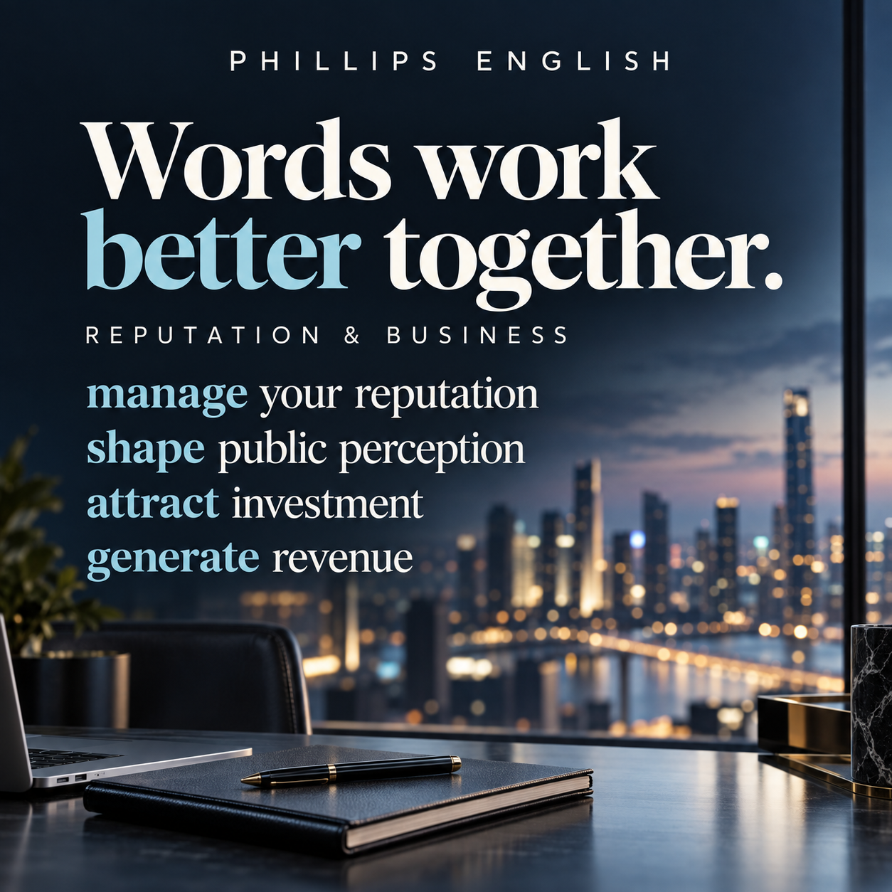

You also need to know which words naturally go with it. In football, we usually say commit a foul and take a penalty. Those combinations are called collocations.
Why the right combination matters
You can know every word in a sentence and still put them together in a way that sounds unnatural. “Do a foul” may be understandable, but commit a foul is the established phrase. “Make a penalty” does not express taking the kick naturally; use take a penalty.
This matters in a meeting, a presentation or a discussion about sport. Familiar word combinations help your listener follow your point without having to work out what you meant. Learning phrases together also gives you useful language to reach for when you speak.
Collocations are conventional patterns, rather than a rule that every verb has only one possible partner. For example, a player takes a penalty, a referee awards a penalty, and a goalkeeper saves a penalty. The verb changes with the meaning.
Ten phrases for sport, reputation and business
1. commit a foul
Meaning: break a rule through an illegal action during play.
“The defender committed a foul just outside the penalty area.”
2. take a penalty
Meaning: perform a penalty kick in football.
“She took the penalty and scored.”
3. manage your reputation
Meaning: take steps to influence how others judge you or your organisation.
“A club needs to manage its reputation both on and off the pitch.”
4. improve your public image
Meaning: make the impression you give the public more positive.
“The organisation hopes the community programme will improve its public image.”
5. face accusations
Meaning: be publicly accused of doing something wrong.
“The organisers faced accusations of misleading the public.”
6. attract investment
Meaning: encourage people or businesses to invest money.
“Improved transport links can help a region attract investment.”
7. promote tourism
Meaning: encourage people to visit a place.
“The campaign uses sporting events to promote tourism.”
8. generate revenue
Meaning: bring in income before costs are deducted.
“Ticket sales and sponsorship generate revenue for the club.”
9. shape public perception
Meaning: influence how people understand or view something.
“Media coverage can shape public perception of a sporting event.”
10. distinguish genuine development from reputation management
Meaning: tell the difference between meaningful improvements and efforts to influence reputation.
“We need evidence to distinguish genuine development from reputation management.”

Use the language to make a precise point
These expressions are useful when discussing sporting events, commercial aims and reputation. Here is a hypothetical example:
“A city might host a tournament to promote tourism, attract investment and generate revenue. The event could also help improve its public image and shape public perception. To judge its lasting value, we need to distinguish genuine development from reputation management.”
Notice the distinction: revenue is income, not profit. And facing accusations means being accused; it does not establish that an accusation is true. Choosing the right phrase helps you express those differences accurately.
Remember the structure: distinguish X from Y
The final expression is longer, but the pattern is simple: distinguish + one thing + from + another thing.
- Distinguish facts from opinions.
- Distinguish short-term publicity from long-term progress.
- Distinguish genuine development from reputation management.
A quick practice task
Complete the sentences with a suitable verb: shape, take, attract, commit, generate.
- A player can ___ a foul.
- The captain will ___ the penalty.
- The region hopes to ___ investment.
- Sponsorship can ___ revenue.
- News coverage can ___ public perception.
Check your answers
1. commit · 2. take · 3. attract · 4. generate · 5. shape
Now choose three phrases and use them to discuss a sporting event or a business you know. Say your sentences aloud, then try again without looking at the list.
How I practise this with students
I use topics students want to discuss, pick out the combinations they need, and correct the phrases that sound unnatural. We then reuse the language in questions, explanations and short speaking tasks.
Instead of writing down “revenue” on its own, record generate revenue with an example. Instead of memorising “reputation”, practise manage your reputation. You are building language you can use in a conversation, rather than another list of disconnected words.